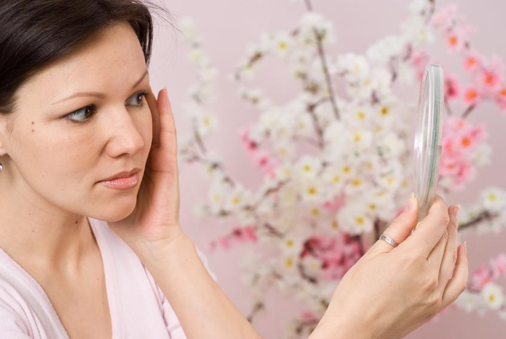
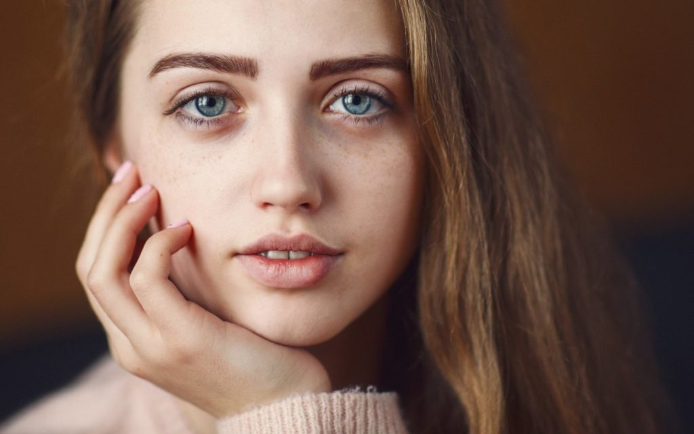

Взаимосвязь гормонального фона с нарощенными ресницами
Содержание
Прием гормонов, грудное вскармливание и наращивание ресниц — можно ли?
Красивые, ухоженные женщины во все времена вызывали восхищение у мужчин. Для того, что бы выглядеть привлекательно, не всегда достаточно владеть лишь природным обаянием, и многие дамы идут на процедуру наращивания ресничек. Это безболезненная и популярная процедура, с помощью которой можно достичь соблазнительного эффекта для выразительности глаз. Однако, важно соблюдать рекомендации по наращиванию ресниц.
После нее приятно смотреть на свое отражение в зеркале и можно экономить время на утреннем макияже. С нарощенными ресничными волосками кардинально меняется взгляд и акцент на черты лица. Дамы начинают чувствовать уверенность и осознают свою сексуальность. Даже на фотографиях невозможно отвести взгляд, когда веки девушки украшают длинные густые ресницы, а природный волосок от искусственного тяжело отличить, когда работу делал опытный мастер.
Очень часто девушки перед походом в салон красоты задают себе вопрос : «Разрешено ли наращивать ресничные волоски во время критических дней, при грудном вскармливании, приеме гормональных средств или все же лучше подождать?» Давайте разберемся в этом вопросе.
Многие могут утверждать, что не видят взаимосвязи и критические дни не влияют на наращивание, но это не так. Ответ на этот вопрос – гормональный сбой. Он может спровоцировать различные болезни, которые в итоговом результате приведут к ломкости волосков, их потери или повредить структуру.
Конечно, нельзя говорить, что при менструации категорически нельзя делать процедуру наращивания ресничек. У каждой девушки организм индивидуален, но вы должны знать о проблемах, которые потом могут возникнуть.
Возможные осложнения после наращивания во время критических дней
- Непредвиденная аллергия на используемые материалы.
- Выпадение или ломкость нарощенных ресничек.
- Недолгий эффект.
Также многих девушек мучает вопрос по поводу того, можно ли наращивать реснички кормящим мамам. Ведь это один из самых интересных моментов в жизни женщины, хочется выглядеть привлекательно, но на утренний макияж редко хватает времени. Если вы решили нарастить реснички при гв, то нужно знать основные рекомендации, чтобы ни навредить здоровью.
Рекомендации по наращиванию ресничек при гв
- Обратиться к опытному, профессиональному и ответственному мастеру.
- Попросить, чтобы накануне наращивания сделали пробу на наличие аллергической реакции (особое внимание обратить наклей).
- Сильно не тереть глаза.
- После процедуры придерживаться советов по уходу за ресничными волосками после наращивания.
Также очень часто встречаются женщины, которые применяют гормональные препараты и не знают, есть ли взаимосвязь данных препаратов с наращиванием ресниц. Мнение специалистов в этом вопросе разошлись.
- Слабость ресничных волосков.
- Ломкость.
- Сухость или жирность кожи век.
- Повышенный рост натуральных ресниц.
- Повышенная слезоточивость.
Красоту взгляда девушки желают сохранять независимо, в каком периоде жизни они перебывают. Ведь и молодой маме и взрослой барышне хочется смотреться соблазнительно, эффектно и привлекательно. Рискнув на процедуру наращивание ресниц во время гормональных перепадов, основное, что нужно делать — это следить за своим самочувствием, придерживаться советов по уходу после процедуры и настроиться, что все пройдет хорошо
Если вдруг придя домой заметите аллергическую реакцию (слезоточивость, припухлость, зуд глаз), нужно срочно снять ресницы.
Если нет возможности пойти к специалисту, можно быстро и доступно удалить нарощенные волоски при помощи жирного крема:
- Разрежьте на две части ватный диск и уложите его под нижнее веко.
- Аккуратно, чтобы крем не попадал в глаза, наносим его на веко
- Оставить на 30-40 минут и легким движением руки снять отклеившиеся ресницы.